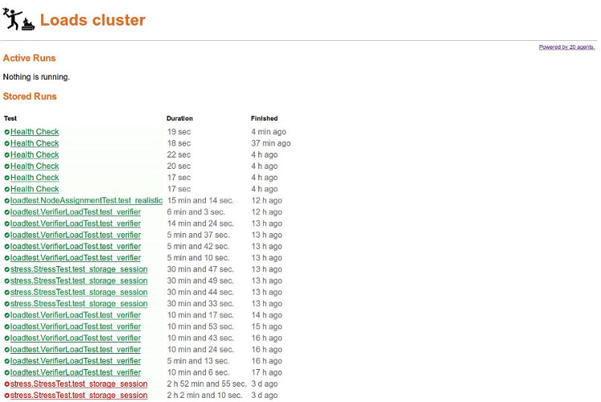

Loads — DjangoCon EU
Presenter Notes
Conterit Omnia Tua Application
Rémy Hubscher - natim@mozilla.com - @natim
Presenter Notes
What is Loads for?
Loads is there to answer this kind of questions:
- Is your architecture ready to handle your user loads?
- Does it break under pressure?
- How far can you push your server architecture?
It let you run a load test:
- From a computer
- From a local cluster
- From a cloud cluster
And it is always the same simple command:
$ loads-runner --ssh user@loads-master loadtests.TestWebSite.test_es
Presenter Notes
How to write a test for loads
You can just write a Python unittest:
from loads.case import TestCase class TestWebSite(TestCase): def test_es(self): res = self.session.get('http://localhost:9200') self.assertEqual(res.status_code, 200) def test_island(self): self.assertTrue('island' in self.app.get('/')) def test_something(self): self.assertTrue('island' in self.app.get('/')) self.incr_counter('island-was-there')
- self.session is a wrapper around requests.Session that will handle the load to a specific endpoint.
- self.app is a similar wrapper around WebTest so that you can run the same tests on different endpoints or even use a functional test as loadtest.
- You can load test websockets
Presenter Notes
Deploy a cluster
- You need to start a loads-broker on you cluster master.
- You need to start a loads-agent per node.
We use circus to monitor loads-broker and loads-agent processes.
You can use loads-runner with command line arguments as well as using a configuration file.
Presenter Notes
Monitor your cluster
There is a web dashboard that can show you the status of your cluster in real-time:
Presenter Notes
Results
$ loads-runner loadtests.TestWebSite.test_something \ --include-file loadstests.py \ -u 200 --server-url http://2014.djangocon.eu [==============================================================] 100% Duration: 2.87 seconds Hits: 200 Started: 2014-05-09 16:13:38.219595 Approximate Average RPS: 69 Average request time: 0.58s Opened web sockets: 0 Bytes received via web sockets : 0 Success: 200 Errors: 0 Failures: 0 Slowest URL: http://178.32.28.121:80/ Average Request Time: 0.5801773 Stats by URLs: - http://178.32.28.121:80/ Average request time: 0.5801773 Hits success rate: 1.0 Custom metrics: - island-was-there : 200
Presenter Notes
The future of loads
- We are improving the architecture to reduce the bottleneck between loads-broker and loads-agent with a centralized database in the middle.
- We are building a loads-runner interface for other languages (go, node, etc.)